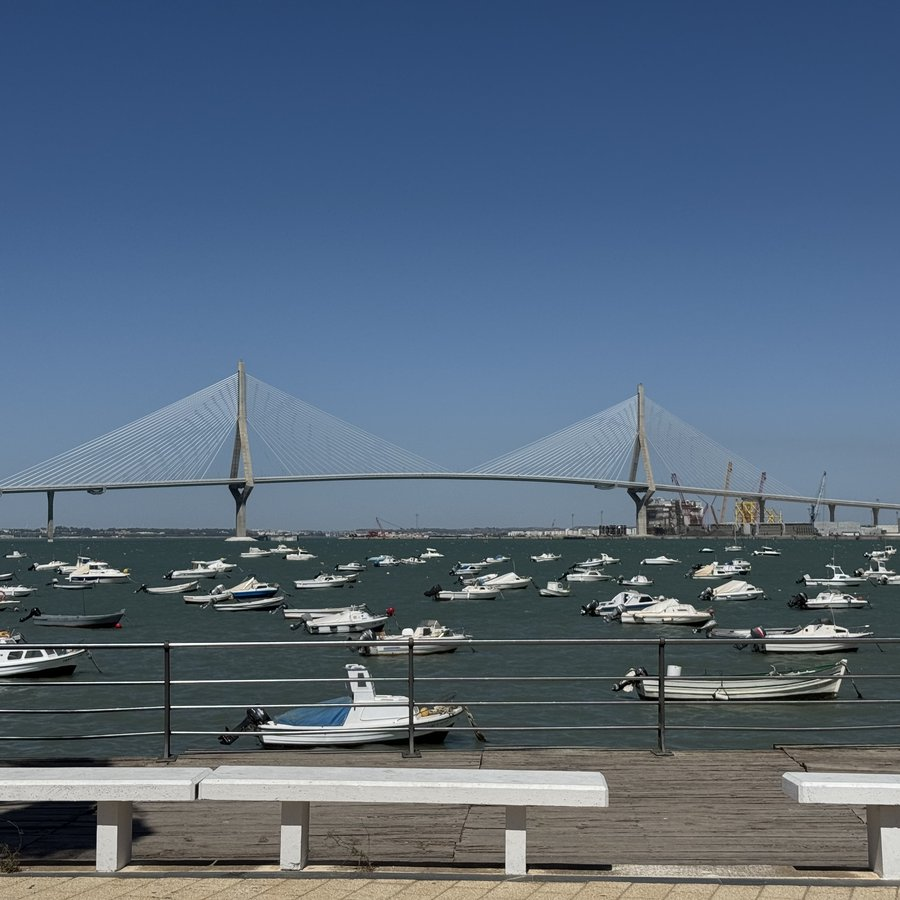
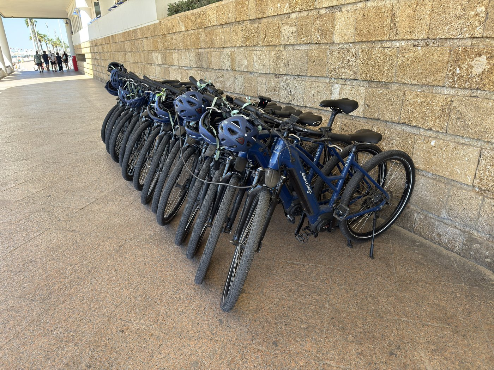
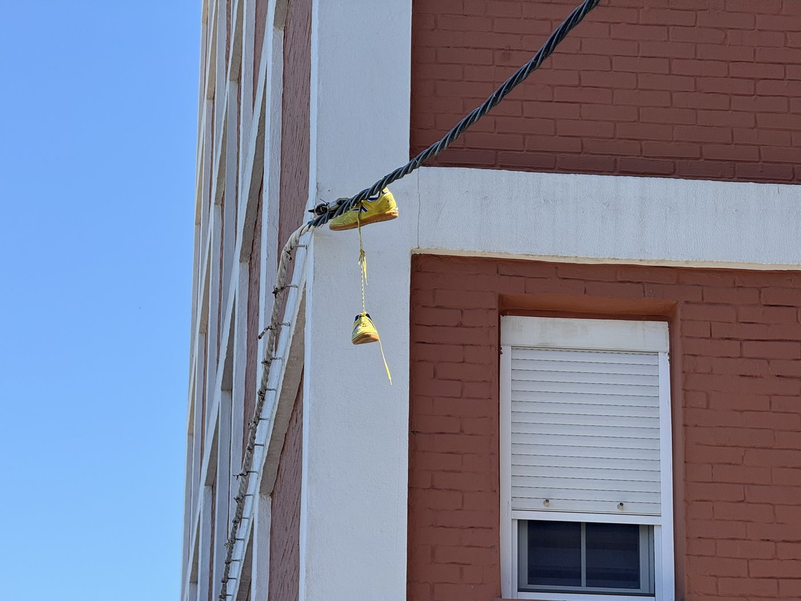
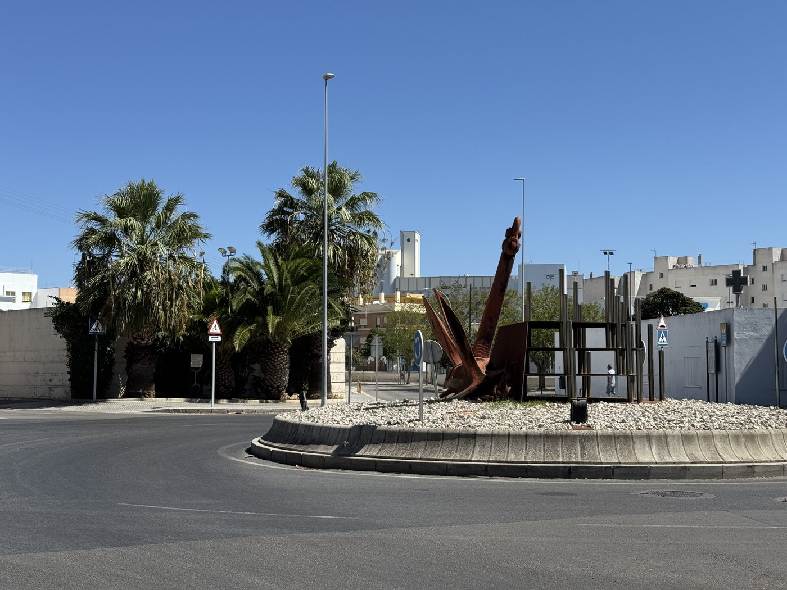
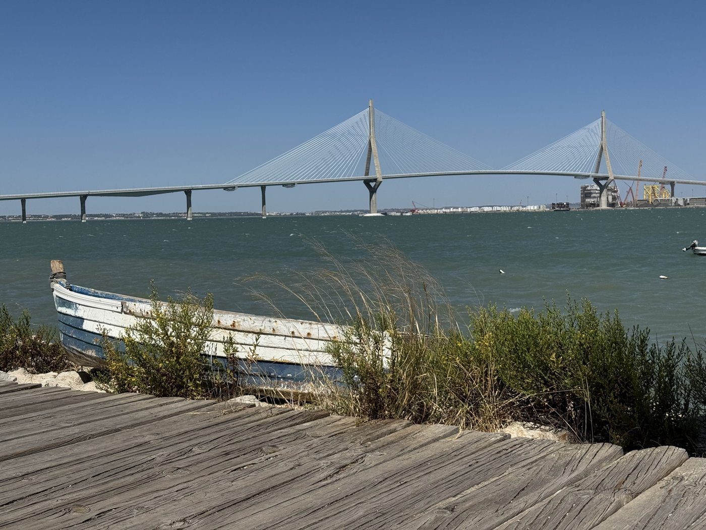
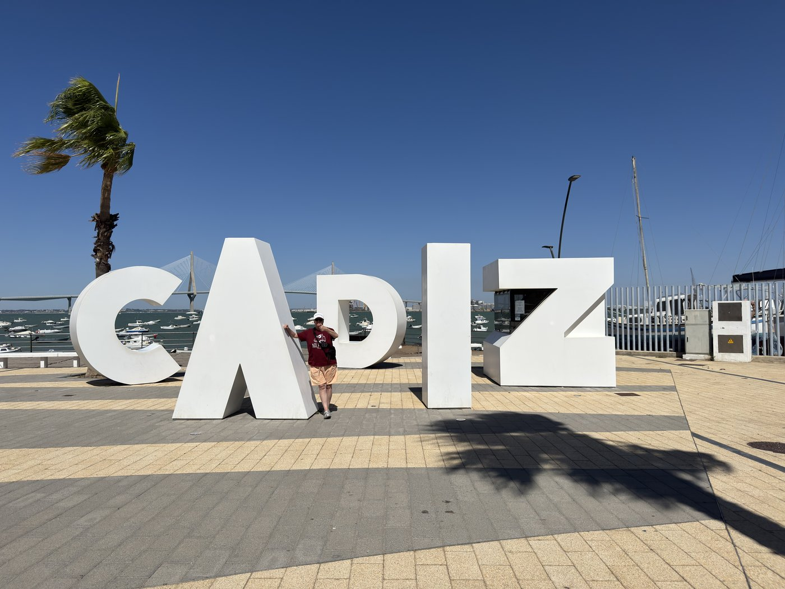
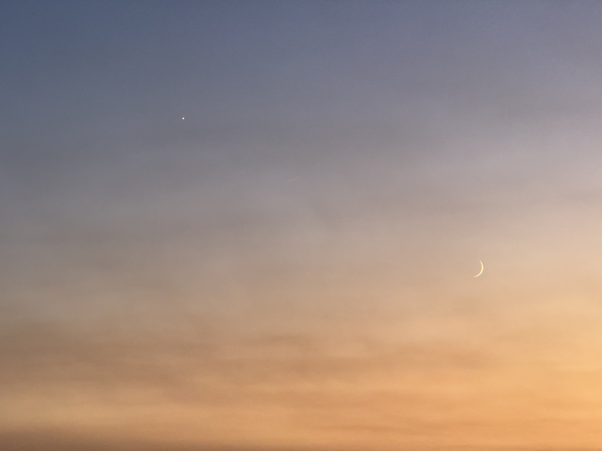
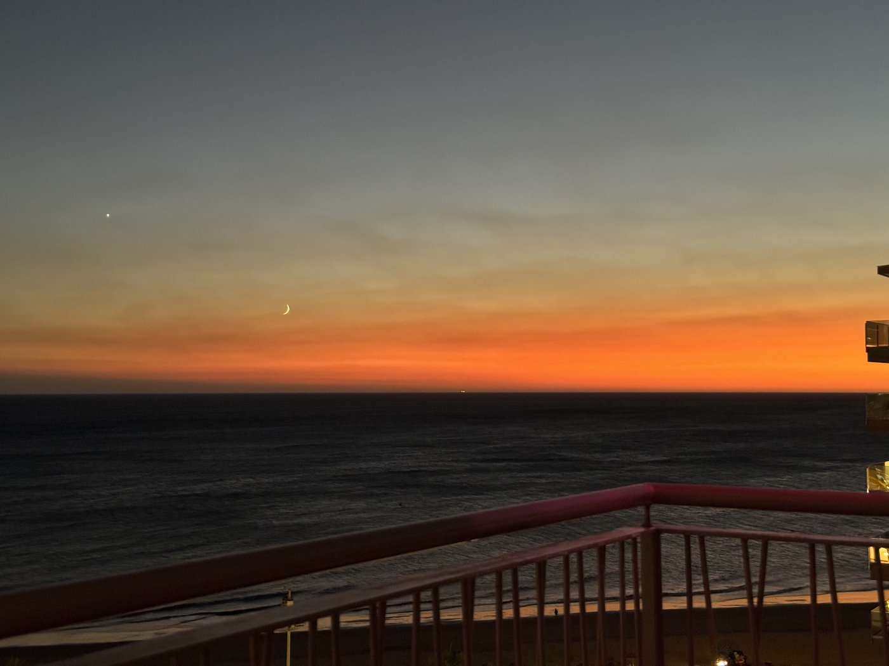

Nach der Anstrengung vom Vortag wollte ich heute eigentlich gar nichts machen. Also haben wir beschlossen, nur schnell zum Burger King zu gehen und dann für den Rest des Tages im Hotelzimmer rumzuoxidieren.
Und dann fiel uns auf, daß wir ja noch gar nicht auf der anderen Seite der Halbinsel waren. Dabei ist die nur 950 Meter breit.
Auf dem Weg dorthin sahen wir am Paseo Marítimo einen Haufen Drahtesel — mit Mein Schiff-Aufdruck.

Die Mein Schiff 6 ist also wieder hier, zusammen mit der Liberty of the Seas und der La Belle de Cádiz, einer Art Flußkreuzfahrtschiff, das wohl hier die Küste auf und ab fährt. Demzufolge waren auch die roten Busse heute wesentlich besser ausgelastet als gestern. Brauchte uns nicht zu kümmern, wir waren eh per pedes unterwegs.
Unterwegs fühlte ich mich plötzlich an eine Szene aus Better Call Saul erinnert. Nur waren die Schuhe gelb statt rot, es war kein Lieferwagen zu sehen, und Schüsse waren auch keine zu hören.

Eine schöne Skulptur mit einem Paten-Tanker haben wir auf dem Weg auch noch gesehen. Patentanker! Mensch!

Und jetzt habe ich endlich auch ein paar Bilder von der „neuen" Brücke, der Puente de la Constitución de 1812.
Bei meinem ersten Besuch in Cádiz gab es sie noch nicht — sie wurde erst 2015 eingeweiht. Vorher führte der Weg auf die Landzunge entweder über die Klappbrücke oder ganz um die Bucht herum über den Damm.

Als wir uns den Letras de Cádiz näherten — solche Buchstabenmonumente gehören an Touristenorten ja mittlerweile zur Tradition — überholte uns plötzlich eine Fahrradgruppe. Von der Mein Schiff. Dann noch eine. Und noch eine. Und noch eine.
Insgesamt vier unabhängige Gruppen, die ausgerechnet zu der Zeit zu den Buchstaben wollten, als wir auch gerade dort ankamen.

Zum Glück haben sie sich nicht übermäßig lange dort aufgehalten. Allerdings muß man sagen, daß es dort außer ein paar gut ausgestatteten Selfie-Punkten — in die man sein Handy einspannen und mit Selbstauslöser Selfies machen kann — nicht allzu viel gibt. Und kaum waren die vier Fahrradgruppen weg, war auch so gut wie niemand mehr da. Die Promenade war bis auf zwei, drei andere Pärchen wie leergefegt.
Das könnte natürlich auch ein bisschen am Levante gelegen haben, dem kräftigen Ostwind, für den Cádiz berühmt und ein wenig berüchtigt ist. Denn der hat richtig ordentlich gepustet: Mir hat es einmal sogar das Käppi weggepustet, so daß ich es zeitweise lieber am Gurt befestigt habe.
Aber das war wirklich ein nettes Mützchen Wind. Bei den Videos habe ich hoffentlich zuverlässig den Ton ausgeschaltet — ohne Tote Katze, wie der pelzige Windschutz überm Mikrofon im Fachjargon heißt, wird das mit dem Ton bei so einem Wind nix.
Auf dem Rückweg fanden wir noch einen kleinen Calisthenics-Park. Ich konnte mein Gewicht sogar pushen — mehr als fünf Wiederholungen habe ich allerdings nicht geschafft. Aber immerhin überhaupt geschafft, und es hat sogar ein bisschen Spaß gemacht.
Insgesamt sind aus dem kleinen Rundgang dann doch wieder knapp drei Kilometer geworden. Dabei wollte ich doch einfach nur rumgammeln heute.

Nachtrag, 20 Uhr: Jetzt habe ich endlich mal das erwischt, was hier in Cádiz als einziges gelegentlich unangenehm werden kann. Der Wind treibt oft feinen Sand über den Strand — und in geringerem Umfang auch über strandnahe Teile der Stadt — wodurch man gleich noch kostenlos sandgestrahlt wird.
Teure Peeling-Anwendungen kann man sich hier sparen. Die besorgt Mutter Natur.
